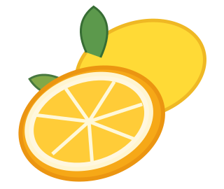
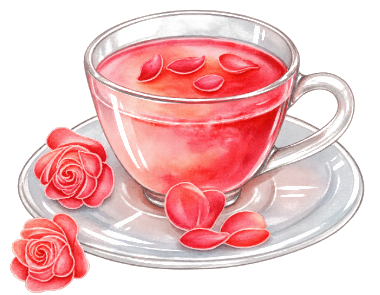

CHAPTER 01 / THE INGREDIENTS
FOUR FLAVORS
OF SPRING.
Sweet strawberries, sour lemons, earthy matcha, and delicate flower tea. These four flavors remind me of warmer days and new beginnings.

01 / SWEET & JUICY
STRAW
BERRY.
Fresh strawberries bring a sweet and juicy taste. They remind me of warm days and the beginning of spring.

02 / BRIGHT & SOUR
LEMON.
Lemons have a bright and refreshing taste. Their sour flavor feels fresh and full of energy.

03 / EARTHY & FRESH
MATCHA.
Matcha has a slightly bitter and earthy taste. It reminds me of fresh green leaves and nature.

04 / LIGHT & FLORAL
FLOWER
TEA.
Flower tea has a light and delicate taste. It connects the flavors of spring with blooming flowers.